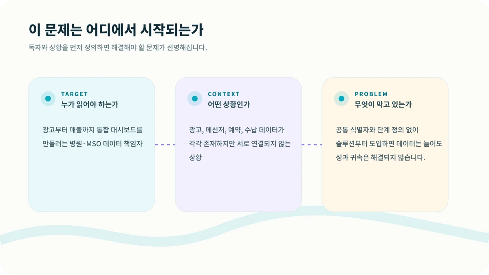
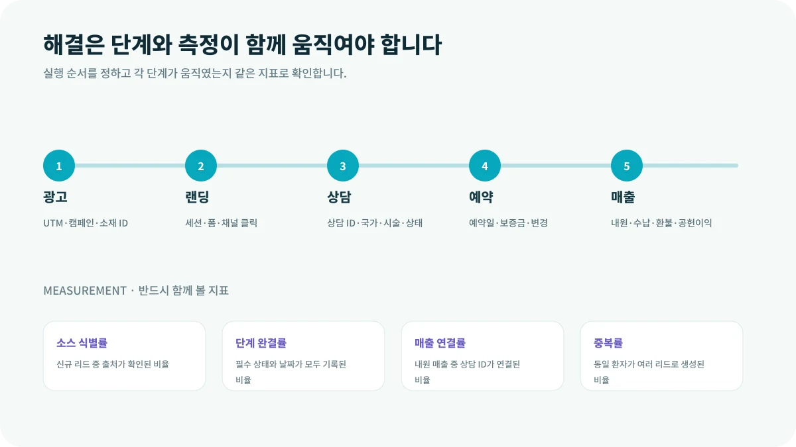

광고 보고서에는 캠페인 이름이 있고, 상담 메신저에는 환자 닉네임이 있으며, 예약 시스템에는 다른 이름이 저장됩니다. 데이터가 많아도 서로 같은 사람인지 연결되지 않으면 매출을 만든 광고를 알 수 없습니다.
이 글은 광고부터 매출까지 통합 대시보드를 만들려는 병원·MSO 데이터 책임자에게 특히 필요합니다. 지금처럼 광고, 메신저, 예약, 수납 데이터가 각각 존재하지만 서로 연결되지 않는 상황이라면, 먼저 숫자를 늘리기보다 문제의 구조를 다시 볼 필요가 있습니다.

CORE INSIGHT핵심은 관점을 바꾸는 것입니다
환자가 인스타그램 광고를 보고 LINE으로 들어와 상담한 뒤 다른 이름으로 예약하면 최초 유입 정보가 끊길 수 있습니다. 상담 ID 하나가 광고 클릭, 대화, 예약, 수납에 이어지면 비로소 전체 여정을 볼 수 있습니다.
WHY IT HAPPENS왜 이런 일이 반복될까요?
1. 한 리드에 하나의 식별자를 부여합니다
채널마다 이름과 전화번호를 다르게 저장하면 중복과 성과 귀속 오류가 생깁니다.
2. 원천값을 보존합니다
최초 UTM과 캠페인·소재 정보를 덮어쓰지 않고 후속 접점과 분리해 저장합니다.
3. 단계 정의를 통일합니다
문의, 유효상담, 예약, 내원, 매출의 조건을 팀 전체가 동일하게 사용해야 합니다.
HOW TO SOLVE현장에서는 이렇게 풀어야 합니다
해결은 한 번의 캠페인이나 담당자의 노력만으로 완성되지 않습니다. 다음 다섯 단계를 하나의 흐름으로 연결하고, 단계가 바뀔 때마다 기록을 남겨야 합니다.

MEASUREMENT무엇을 측정해야 할까요?
결과만 보면 문제가 발생한 위치를 알 수 없습니다. 아래 지표를 같은 기간과 같은 정의로 추적하면 어느 단계가 실제 병목인지 확인할 수 있습니다.
| 소스 식별률 | 신규 리드 중 출처가 확인된 비율 |
|---|---|
| 단계 완결률 | 필수 상태와 날짜가 모두 기록된 비율 |
| 매출 연결률 | 내원 매출 중 상담 ID가 연결된 비율 |
| 중복률 | 동일 환자가 여러 리드로 생성된 비율 |
START THIS WEEK이번 주에 바로 확인할 네 가지
통합 대시보드보다 먼저 해야 할 일은 식별자와 상태 정의를 합의하는 것입니다. 작은 스프레드시트라도 기준이 일관되면 학습할 수 있지만, 기준이 다른 여러 솔루션은 혼란만 자동화합니다.
GUARDRAIL실행 전에 반드시 확인할 점
본 콘텐츠는 병원 사업·운영을 위한 일반 정보이며, 의료·법률·세무 자문을 대체하지 않습니다. 실제 적용 시 관련 전문가와 최신 법령을 확인해야 합니다.
현재 병원의 병목을 함께 찾아보세요.
시장·마케팅·상담·CRM·운영 중 어디에서 성장이 멈추는지 구조적으로 진단합니다.